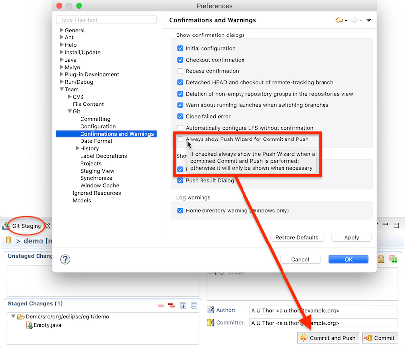

| EGit 5.9 New and Noteworthy | ||
|---|---|---|
|
|
||
| Contributors | ||
EGit 5.9 has a new preference for the "Commit and Push" button in the Git Staging view:

With the new preference, users can make that button always show a push confirmation dialog, where the push target (upstream repository, or branch to push to) can be changed. If the preference is not checked, EGit will push directly to the upstream branch configured for the currently checked-out branch and will show the dialog only if there is no upstream branch configured.
When there are no staged changes, the button reads "Push HEAD..." and will always show a dialog.
EGit 5.9 includes some of less noticeable improvements in the UI, plus a number of bug fixes. The complete list of new features and bug fixes is available in the release notes.
|
|
||
| Contributors |